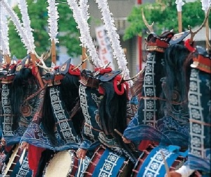
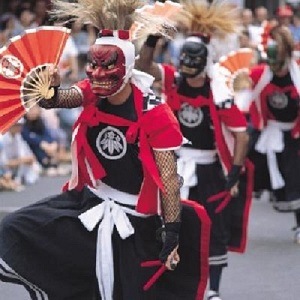
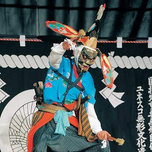

鹿踊（ししおどり、しかおどり）は、江戸時代の南部氏領（盛岡藩陸奥国領）、および、伊達氏領（仙台藩・一関藩の陸奥国領、および、宇和島藩伊予国領）、すなわち現在の岩手県、宮城県、そして愛媛県宇和島市周辺で受け継がれている伝統舞踊。農漁村の共同体の祭りで披露される舞踊としての歴史が長いが、これらとは異なる共同体である学校の部活動の1つにもなっている。これは、高度経済成長期より観客を集める祭りやイベントが多数開催された影響もある。

鬼剣舞（おにけんばい）は、岩手県北上市周辺に伝わる伝統芸能である。地元では、剣舞を「けんべぇ」とも言う。北上・みちのく芸能まつりを初め、この地方の夏祭りなどで盛んに披露されるほか、小・中学校の運動会のアトラクションとしても演じられ、地元に根付いている。複数の踊り組団体がある（後述、鬼剣舞伝承系統、鬼剣舞伝承系図、参照）。1993年（平成5年）12月13日に代表的な北上市の岩崎鬼剣舞と滑田鬼剣舞の2団体・奥州市の朴ノ木沢念仏剣舞と川西大念佛剣舞の2団体が一括し、国の重要無形民俗文化財「鬼剣舞」として指定された。

早池峰神楽（はやちねかぐら）は、岩手県花巻市大迫町に伝わる民俗芸能の神楽。1975年（昭和50年）の文化財保護法の改正によって制定された重要無形民俗文化財の第1回の指定を受け、2009年（平成21年）にユネスコの無形文化遺産に登録された。
里神楽のうち山伏神楽に分類。早池峰山にて修行していた山伏が伝えたものとされ、1488年（長享2年）に記された伝授書があることから南北朝の時期には既に確立されていた。大償と岳という2つの神楽座があり、それぞれ大償神社と早池峰神社の奉納神楽となっている。